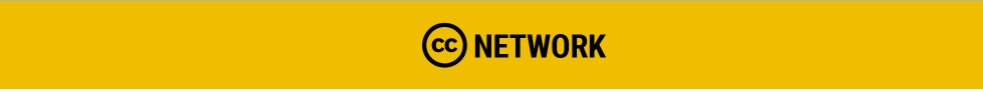

Jaringan Global Creative Commons

Sejak 17 Januari 2018 lalu Creative Commons Headquarter (CCHQ) meluncurkan secara resmi sistem jaringan terbaru mereka yaitu Creative Commons Global Network (CCGN) atau Jaringan Global Creative Commons. Model jaringan ini mulai dirancang dalam diskusi-diskusi yang diadakan pada dua Konferensi Tingkat Tinggi Creative Commons terdahulu yaitu Creative Commons Global Summit 2015 di Seoul, Korea Selatan dan Creative Commons Global Summit 2017 di Toronto, Kanada. Dengan adanya model jaringan ini diharapkan CCHQ dapat memperluas kesempatan kolaborasi dalam hal apapun dengan insititusi maupun individu yang tidak termasuk di dalam daftar jaringan afiliasi sebelumnya. Model jaringan ini juga merupakan pengganti model jaringan afiliasi dari negara-negara yang kemudian dikelompokan secara regional, CC Asia Pasifik, CC Arab, CC Eropa, serta CC Amerika Latin. Masing-masing afiliasi dan dipimpin oleh koordinator regional. Posisi koordinator tersebut kini dipegang oleh satu orang sebagai Global Coordinator atau Network Manager (Manajer Jaringan Global) yakni Simeon Oriko dari CCHQ.
Sistem Keanggotaan Jaringan Global Creative Commons
Angka total ciptaan berlisensi Creative Commons (lisensi CC) telah mencapai angka 1 miliar lebih ciptaan. Fungsi Creative Commons Internasional untuk lisensi CC sebagai organisasi mirip seperti Wikimedia Foundation untuk Wikipedia. Kekuatan terbesar Creative Commons sebenarnya bukan didapatkan dari organisasi utamanya atau afiliasi resmi di tiap negara, melainkan dari jumlah ciptaan berlisensi CC yang dengan sukarela disumbang oleh para kontributor CC dari seluruh dunia. CC tidak hanya berada di satu tempat atau milik satu pihak saja, pada hakikatnya adala milik semua orang.
Kesadaran ini menjadi dasar perluasan model jaringan CC dengan model CCGN. CC mengundang Anda semua untuk bergabung dengan mengikuti pola-pola berikut:
Dengan menciptakan model jaringan yang lebih inklusif dan fleksibel, sebagai organisasi dengan bentuk “Organisasi Amal” yang berfungsi sebagai pengelola gerakan, CC telah merumuskan kode etik bagi pihak-pihak yang tergabung sebagai anggota Jaringan Global Creative Commons. Kode etik ini adalah perjanjian yang mengikat seluruh anggota jaringan global ini untuk melaksanakan hak dan kewajibannya sebagai anggota. Kode etik ini juga berfungsi untuk mengatur pelaksanaan setiap kegiatan yang membawa nama Creative Commons supaya tidak menodai reputasi dan upaya kolaborasi Jaringan Global Creative Commons dalam mencapai tujuan-tujuannya.
Anda dapat mendaftarkan diri melalui dua jalur, yaitu sebagai individu melalui Individual Membership atau sebagai kelompok melalui Institutional Membership. Pola keanggotaan ini merupakan model keanggotaan formal di mana salah satu kelebihannya adalah Anda tidak perlu meminta izin lagi ketika Anda menggunakan nama CCHQ di kegiatan yang Anda buat, dengan catatan kegiatan tersebut memiliki tujuan yang sejalan dengan nilai-nilai yang dijunjung oleh Creative Commons. Pihak yang terdaftar sebagai Individual Member maupun Institutional Member kemudian dapat menjadi koordinator untuk merangkum atau berfungsi sebagai penghubung untuk seluruh kegiatan yang berkaitan dengan Creative Commons yang diadakan di negara tempat pihak tersebut berkegiatan. Selain itu pihak yang terdaftar juga dapat menjadi penghubung antara pihak-pihak yang terlibat dalam kegiatan Creative Commons di suatu negara dengan anggota Jaringan Global Creative Commons di negara yang lain atau dengan Creative Commons Headquarter.
Maka dari itu pola yang diusulkan oleh Creative Commons ialah di setiap negara supaya dibentuk satu komunitas, tidak perlu berbentuk afiliasi atau badan resmi, dengan istilah Local Chapter, yang menghimpun setiap pihak yang melaksanakan kegiatan dalam bidang keterbukaan secara umum atau kegiatan yang berkaitan dengan CC secara khusus. Setelah itu, kesepakatan seluruh anggota Local Chapter kemudian menunjuk satu orang (individu) atau satu institusi sebagai anggota jaringan Global untuk melaksanakan hak dan kewajiban mereka di Jaringan Global Creative Commons. Pola ini dimaksudkan untuk juga meningkatkan jumlah anggota perwakilan CC HQ di setiap negara yang sudah ada sebelumnya dalam bentuk afiliasi, sekaligus membuka peluang kerja sama dengan setiap kontributor CC di negara tersebut dalam kegiatan bertema keterbukaan secara umum atau Creative Commons secara khusus. Calong anggota CCGN, baik individu maupun institusi, juga harus melalui tahap penyaringan oleh CCHQ yaitu mendapatkan dua suara dari anggota CCHQ sebagai jaminan bahwa pihak tersebut berkompeten untuk menjadi anggota CCGN.
Anda dapat membaca cara mendaftarkan diri sebagai Individual Member di CCGN dengan mengklik teks ini.

Contributors atau Kontributor yang dimaksudkan dalam konteks CCGN adalah setiap pihak, baik individu maupun institusi, yang menerapkan lisensi Creative Commons pada produk-produk dari kegiatannya. Dalam hal ini CCHQ memberikan panduan secara spesifik apa saja yang bisa dilakukan oleh kontributor untuk gerakan Creative Commons, seperti yang tertera pada gambar di atas. Kontributor dapat bergabung dalam komunitas gerakan Creative Commons dengan berlangganan nawala terbitan CCHQ atau ikut serta dalam setiap diskusi di kanal Slack gerakan Creative Commons. Kemudian, kontributor juga berkesempatan untuk ikut secara langsung untuk mengelola gerakan keterbukaan sebagai koordinator dengan mendaftarkan diri sebagai anggota individu atau anggota insititusi di CCGN. Hal-hal lain yang bisa disumbang oleh kontributor adalah ikut serta dalam pembangunan teknologi Creative Commons, mengadakan acara tentang gerakan keterbukaan secara umum atau lisensi CC secara khusus, dan berdonasi untuk gerakan Creative Commons.
- Anggota Dewan Sementara
Anggota Dewan Sementara terdiri dari orang-orang yang terlibat dalam penyusunan Anggaran Dasar CCGN. Pihak-pihak ini berhak untuk menyetujui atau menolak individu atau institusi yang mendaftar untuk bergabung dengan CCGN.
Baca lebih lengkap mengenai Anggota Dewan Sementara dengan mengklik tautan ini.
Pilihan Kegiatan
CCGN merumuskan perbidangan dalam melaksanakan kegiatan yang berkaitan degan gerakan keterbukaan dengan sebutan platforms. Platform dibuat sebagai pedoman bagi anggota jaringan atau kontributor dalam melaksanakan kegiatan. Hingga saat ini terdapat 4 macam pilihan kegiatan yang dirumuskan. Kegiatan-kegiatan itu diantaranya adalah:
- Open GLAM platform - Untuk segala gerakan keterbukaan yang berkaitan dengan Galeri, Perpustakaan, Lembaga Arsip, dan Museum.
- Open Education platform - Untuk segala gerakan keterbukaan yang berkaitan dengan Pendidikan Terbuka.
- Community Development - Untuk segala kegiatan yang mendukung pengembangan kapasitas dan kuantitias komunitas dalam gerakan Creative Commons.
- Copyright Reform - Untuk segala kegiatan yang berkaitan dengan reformasi regulasi hak cipta.
Selain itu, CCHQ sebagai pengelola gerakan Creative Commons dan CCGN juga akan berupaya untuk memberikan fasilitas seperti bantuan pendanaan atau publikasi penggalangan dana, serta segala infrastruktur seperti tempat untuk berkumpul dan acara untuk berkumpul bagi seluruh anggota gerakan Creative Commons dan CCGN.
CCGN baru dimulai, pada bulan April 2018 nanti di Creative Commons Globa Summit hasil lebih spesifik dari model jaringan ini akan dibagikan. Mari bergabung bersama kami, menuju berbagi memberdayakan!